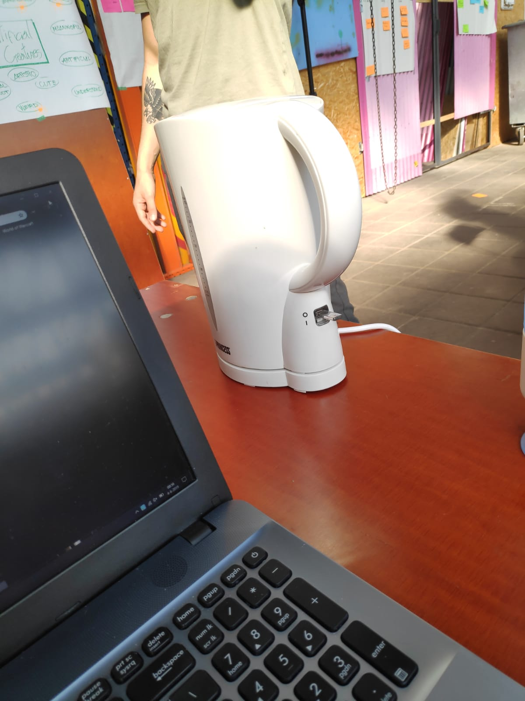
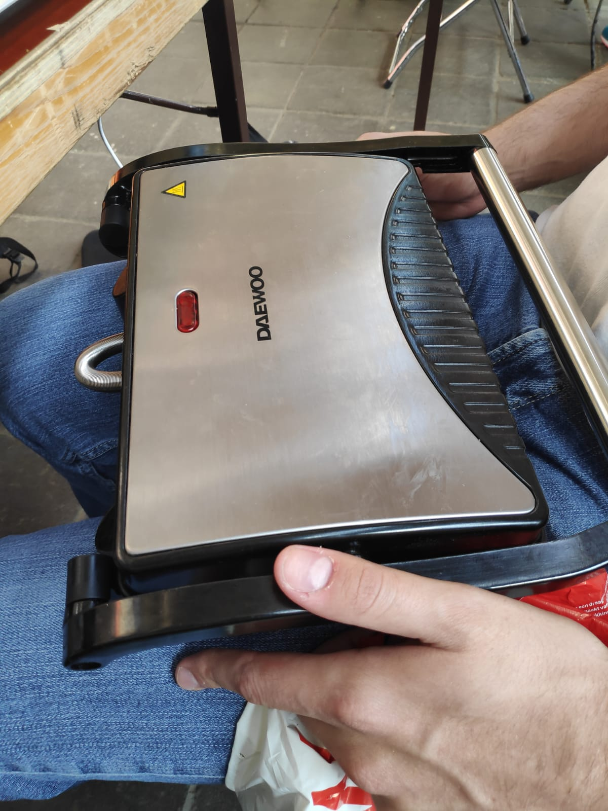
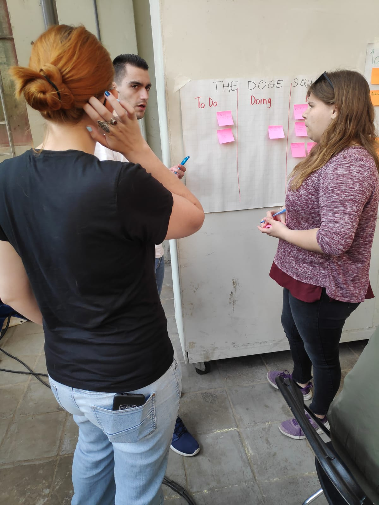

Lab Weeks - Dag 2
Vandaag werkten we ivm het suikerfeest met 4 mensen. Gelukkig waren we wel een stuk beter voorbereid dan de vorige dag. Zo hadden we meer dingen mee zoals Arduino’s en schroevendraaiers die we eigenlijk wel wilden hebben op dag 1. Ook vonden we onze werkplek nog wat oncomfortabel dus had Dennis een waterkoker en een tosti ijzer meegenomen. Zie onderstaande afbeeldingen gemaakt door Yannick.

Dit vond de groep erg fijn. Een fijne, comfortabele werkplek is het halve werk. Hierop volgde de dagelijkse briefing. Het concept van de Daily Stand Up werd uitgelegd. Als groep rond het doing, to do & done vel staan om het over onze voortgang te hebben. Dat hebben we gedaan. Dag 2 draaide nog vooral om het wachten op onderdelen die we op dag 1 besteld hadden.
Als voorbereiding is er op dag 1 & 2 gewerkt aan het verkrijgen van kennis over hoe we met het autootje kunnen werken. Er is gekeken naar allerlei verschillende projecten die andere mensen op het internet gepubliceerd hebben. Aan het einde van dag 2 kon de auto kleine stukjes rijden. De auto zat namelijk nog vast aan de kabel. Morgen (dag 3) willen we kijken of we ook zonder kabel kunnen rijden. Ook willen we kijken of we rechter kunnen rijden. Momenteel wordt er namelijk nog erg scheef gereden, terwijl we juist alleen commando’s geven om vooruit te rijden.